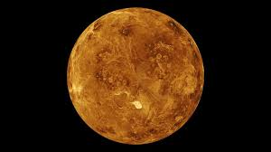
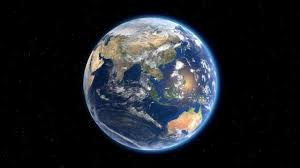

El sistema solar
- Venus
- Tierra

- Venus: 
Venus es el segundo planeta del sistema solar en orden de distancia desde el Sol, el sexto en cuanto a tamaño,
ordenados de mayor a menor. Al igual que Mercurio, carece de satélites naturales. Recibe su nombre en honor a Venus, la diosa romana del amor.
Es el segundo planeta más próximo al Sol y el más cercano a la Tierra; tanto, que es posible verlo a simple vista desde la superficie terrestre. Esto es también posible debido a que es el cuerpo celeste más brillante del Sistema Solar exceptuando el Sol y la luna.
Venus es un planeta rocoso, sin satélites y sin anillos. Se trata de un planeta extremo, caliente, seco y con una presión en la superficie 90 veces
superior a la terrestre. Es de hecho el planeta más caliente de todos a pesar de no estar más cerca del Sol que Mercurio, y aunque sus dimensiones son muy similares
a las de la Tierra, su atmósfera y composición hacen que la vida sea muy poco probable. Curiosamente, este planeta interno realiza una rotación en el sentido de las
manecillas del reloj, es decir, de este a oeste. Completa su órbita alrededor del Sol en 224 días y 17 horas terrestres o para fines prácticos, en 225 días.
En ocasiones se aleja del astro rey mucho más que Mercurio, lo que ocasiona que preceda al Sol en poco más de tres horas. Un día en Venus dura 243 días terrestres.

- Tierra:
La Tierra es el tercer planeta del Sistema Solar (contando en orden de distancia de los ocho planetas al Sol), y el cuarto de ellos de menor a mayor.
Está situada a unos 150 millones de kilómetros del Sol. Es el único planeta en el que hasta ahora se conoce la existencia de vida. La Tierra se formó al mismo
tiempo que el Sol y el resto del Sistema Solar, hace unos 4570 millones de años. El volumen de la Tierra es más de un millón de veces menor que el Sol y la masa
de la Tierra es nueve veces mayor que la de su satélite, la Luna. La temperatura media de la superficie terrestre es de unos 15 °C.
La superficie terrestre o corteza está dividida en varias placas tectónicas que se deslizan sobre el magma durante periodos de varios millones de años.
La superficie está cubierta por continentes e islas; estos poseen varios lagos, ríos y otras fuentes de agua, que junto con los océanos de agua salada que
representan cerca del 71 % de la superficie constituyen la hidrósfera. No se conoce ningún otro planeta con este equilibrio de agua líquida
que es indispensable para cualquier tipo de vida conocida. Los polos de la Tierra están cubiertos en su mayoría de hielo sólido (indlandsis de la Antártida) o de banquisas (casquete polar ártico).
El interior del planeta es geológicamente activo, con una gruesa capa de manto relativamente sólido, un núcleo externo líquido que genera un campo magnético, y un sólido núcleo interior.